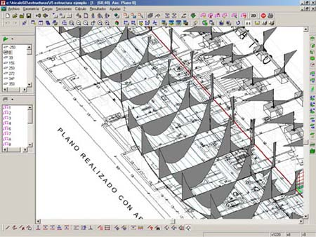
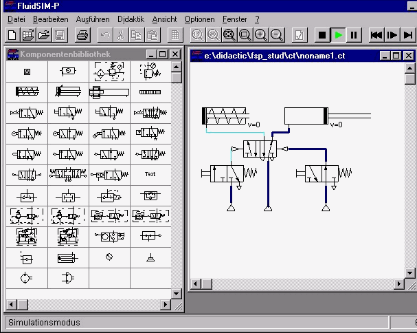
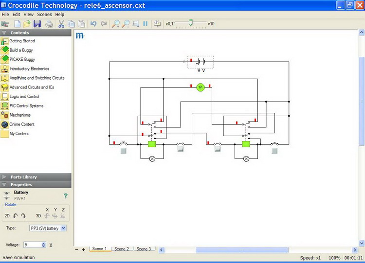

Al igual que en los casos anteriores,
una vez elaborados los planos de un prototipo o de un edificio, podemos
utilizar esa definición geométrica para prever su comportamiento futuro en
relación con distintos aspectos, entre los que destacan:
|
-
Cálculos estáticos de estructuras: partiendo de la definición gráfica de
cualquier objeto se pueden asignar densidades, resistencias y esfuerzos a los
que se someterá una vez construido el objeto, para definir las características
que debe tener dicho objeto. Por ejemplo, Arktec Tricalc, que es un
programa para cálculo de estructuras en 3D.
|

Pantalla de Arktec Tricalc
|
| |
|

Pantalla de Fluidsim
|
-
Cálculos hidráulicos: se introducen parámetros como
densidad, viscosidad, caudal o rozamiento, para los líquidos, y forma,
dimensiones, longitud y adherencia, para los tubos. También se puede averiguar
el comportamiento que tendrán los fluidos en el interior de tuberías o simular
túneles de viento para analizar el comportamiento aerodinámico de un vehículo o
un avión. Por ejemplo, Fluidsim.
|
| |
|
- Ensayos dinámicos: es posible también realizar ensayos
para conocer la reacción del proyecto a esfuerzos dinámicos, como impactos, su
propio movimiento o la resistencia sísmica de un edificio.
|
| |
|
|

Pantalla de Crocodile Technology
|
-
Dibujo y cálculo de redes y circuitos:
algunos programas son capaces de combinar el diseño gráfico y el cálculo basado
en este diseño para desarrollar y comprobar el funcionamiento de circuitos
eléctricos o de fluidos (redes de fontanería, calefacción o aire a presión en
fábricas). Por ejemplo, programas como Crocodile Clips (que en su versión más reciente ha pasado a llamarse Crocodile Technology) o Electronics
Workbench, o el más profesional OrCAD.
|